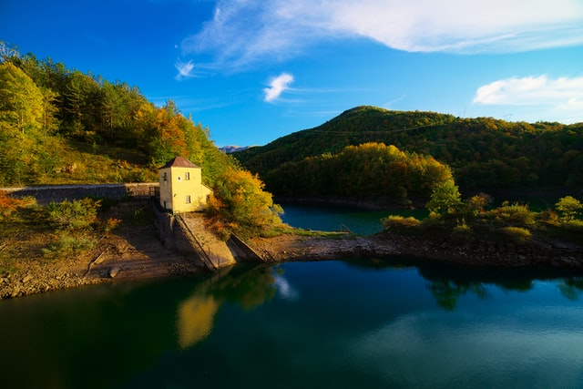
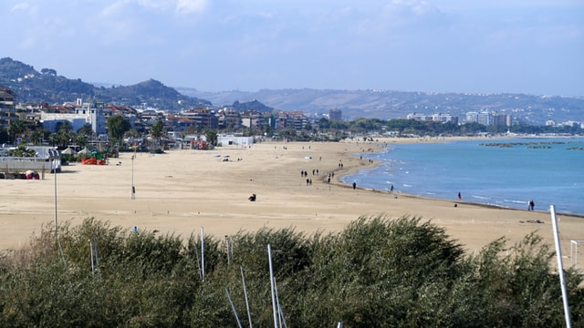
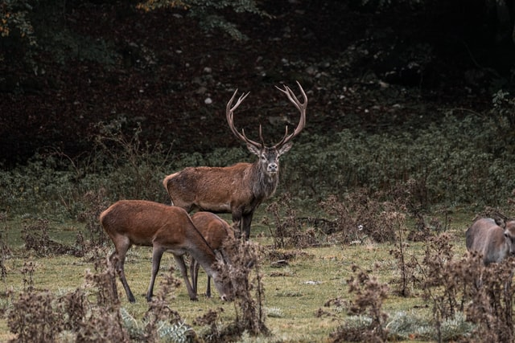
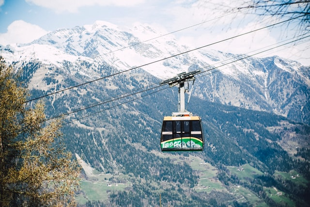

PLACES TO VISIT IN ABRUZZO

Majella Nature Reserve, L'Aquilla

Castle Ginorra, Chieti

Pescara Beach, Pescara
THINGS TO DO IN ABRUZZO

Horse riding on Pescara beach, Pescara

Deer trails near Castle Ginorra, Chieti
